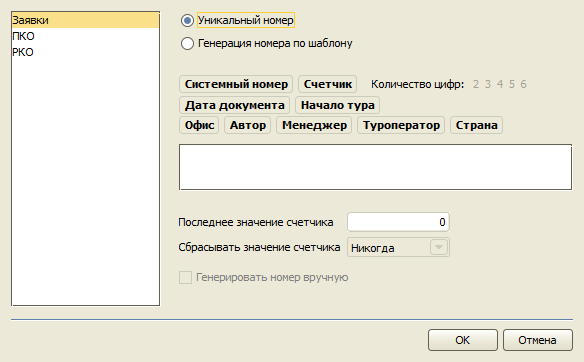
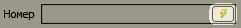
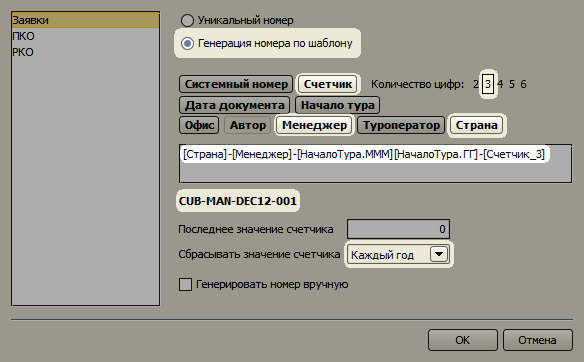
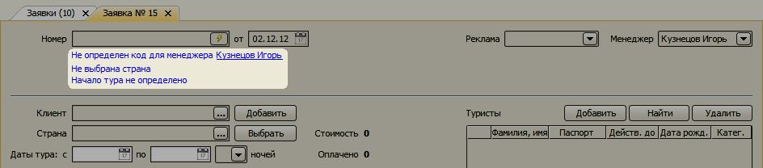
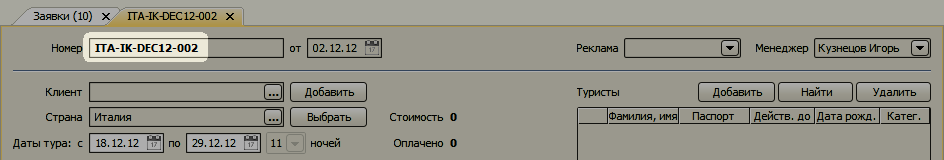
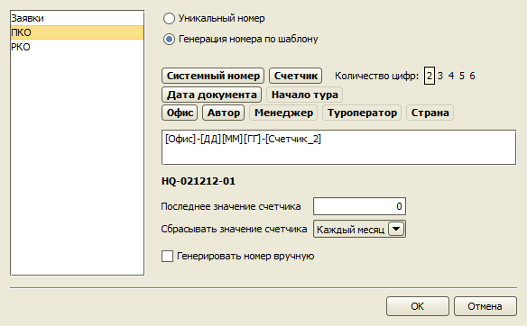

Нумерация документов
Главное меню → Настройки → Нумерация документов
Номер заявки
По-умолчанию при создании заявки ей присваивается уникальный системный номер, начиная с единицы и далее по порядку.

Если переключить режим в "Генерация номера по шаблону", можно составить шаблон, по которому будет генерироваться номер
для новой заявки. В номер могут быть включены следующие данные (коды):
- Системный номер – уникальный номер присваиваемый каждой заявки, начиная с 1 и далее по порядку;
- Счетчик – номер по порядку, увеличивающийся каждый раз на единицу, может сбрасываться для отсчета с 1 в начале каждого месяца или года;
- Дата документа – дата заявки;
- Начало тура;
- Офиса – код офиса менеджера, который создает заявку;
- Менеджер – код менеджера, ответственного за заявку;
- Туроператор – код туроператора; если в заявке присутствует несколько турпакетов от разных туроператоров, берется первый;
- Страна – код страны тура; если тур по нескольким странам, берется первая страна.
Для Системного номера и Счетчика можно определить количество цифр, составляющих номер. Например, для количества цифр равным 5
номер будет иметь следующий вид: 00001, 00002,..., 12345,...
Код для офиса, менеджера, туроператора и страны задается в соответствующем справочнике в специальном поле "Код". Последнее
значение Счетчика можно откорректировать вручную в соответствующем поле. Опция "Генерировать номер вручную" позволяет
формировать номер не при сохранении заявки, а при нажатии на кнопку, находящуюся в поле "Номер" заявки.

Чтобы сформировать шаблон номера последовательно нажмите на кнопки, соответствующие данным, из которых должен будет составляться номер.
В поле шаблона будут появлять теги, определяющие часть номера. Под полем шаблона выводится пример того, как будет выглядить номер.

Если в заявке или в справочниках отсутствуют необходимые данные для генерации номера, программы предложит заполнить
недостающие данные или сохранить заявку без номера.

При заполнении необходимых полей, заявка получает номер, определенный шаблоном.

Номера Поступления в кассу и Расхода из кассы
Шаблоны номеров для документов "Поступление в кассу" и "Расход из кассы" составляются аналогично заявке, но
с меньшим количеством доступных данных (тегов).

Остались вопросы? Напишите нам на e-mail